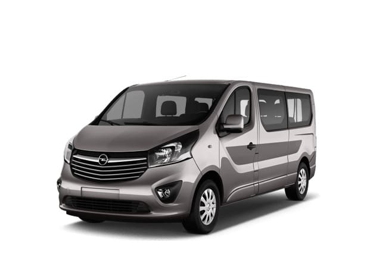

Taxi Marrakech
Grâce à nos formules de transfert aéroport Marrakech nous pouvons assurer vos navettes privées depuis l’aéroport international de Marrakech Menara vers toutes destinations à Marrakech et les villes du Maroc via des minibus et auto
Location de minibus
- Transfert & taxi
Promotions :
Un transfert aéroport / hôtel ou riad en aller simple est offert gratuitement en cas de :
- Réservation de 2 excursions d’une journée.
- Réservation de 2 jours de location.
- Réservation d’un circuit de 2 jours minimum.
Un transfert aéroport / hôtel ou riad en aller-retour est offert gratuitement en cas de :
- Réservation de 3 excursions d’une journée.
- Réservation de 3 jours de location.
- Réservation d’un circuit de 3 jours minimum.
- Transferts inter ville
Nos tarifs sont par navette et non par personne
Taxi aéroport de Marrakech / Guéliz
Tarif sur demande. Indiquez vos dates, le nombre de passagers et votre hebergement : nous repondons avec un prix ferme, net a payer, sous 24 heures ouvrees.
Taxi aéroport de Marrakech / Palmeraie à la limite de 7km
Tarif sur demande. Indiquez vos dates, le nombre de passagers et votre hebergement : nous repondons avec un prix ferme, net a payer, sous 24 heures ouvrees.
Taxi aéroport de Marrakech / Palmeraie à la limite de 15km
Tarif sur demande. Indiquez vos dates, le nombre de passagers et votre hebergement : nous repondons avec un prix ferme, net a payer, sous 24 heures ouvrees.
Taxi aéroport de Marrakech / Targa
Tarif sur demande. Indiquez vos dates, le nombre de passagers et votre hebergement : nous repondons avec un prix ferme, net a payer, sous 24 heures ouvrees.
Taxi Guéliz ou Médina / Palmeraie à la limite de 7 km
Tarif sur demande. Indiquez vos dates, le nombre de passagers et votre hebergement : nous repondons avec un prix ferme, net a payer, sous 24 heures ouvrees.
Taxi Guéliz ou Médina / Palmeraie à la limite de 15 km
Tarif sur demande. Indiquez vos dates, le nombre de passagers et votre hebergement : nous repondons avec un prix ferme, net a payer, sous 24 heures ouvrees.
Taxi aéroport de Marrakech / Zone touristique Agdal
Tarif sur demande. Indiquez vos dates, le nombre de passagers et votre hebergement : nous repondons avec un prix ferme, net a payer, sous 24 heures ouvrees.
Taxi aéroport de Marrakech / Médina
Tarif sur demande. Indiquez vos dates, le nombre de passagers et votre hebergement : nous repondons avec un prix ferme, net a payer, sous 24 heures ouvrees.
Taxi aéroport de Marrakech / Hivernage
Tarif sur demande. Indiquez vos dates, le nombre de passagers et votre hebergement : nous repondons avec un prix ferme, net a payer, sous 24 heures ouvrees.
Taxi aéroport de Marrakech / Centre ville
Tarif sur demande. Indiquez vos dates, le nombre de passagers et votre hebergement : nous repondons avec un prix ferme, net a payer, sous 24 heures ouvrees.
Tarif sur demande. Indiquez vos dates, le nombre de passagers et votre hebergement : nous repondons avec un prix ferme, net a payer, sous 24 heures ouvrees.
Tarif sur demande. Indiquez vos dates, le nombre de passagers et votre hebergement : nous repondons avec un prix ferme, net a payer, sous 24 heures ouvrees.
Transferts : Tarifs par minibus et non par personne
Transfert Marrakech / Casablanca ville
Tarif sur demande. Indiquez vos dates, le nombre de passagers et votre hebergement : nous repondons avec un prix ferme, net a payer, sous 24 heures ouvrees.
Transfert Marrakech / Essaouira
Tarif sur demande. Indiquez vos dates, le nombre de passagers et votre hebergement : nous repondons avec un prix ferme, net a payer, sous 24 heures ouvrees.
Transfert Marrakech / Agadir ville
Tarif sur demande. Indiquez vos dates, le nombre de passagers et votre hebergement : nous repondons avec un prix ferme, net a payer, sous 24 heures ouvrees.
Transfert Aérooport Agadir Massira / Marrakech
Tarif sur demande. Indiquez vos dates, le nombre de passagers et votre hebergement : nous repondons avec un prix ferme, net a payer, sous 24 heures ouvrees.
Transfert Marrakech / Ouarzazate
Tarif sur demande. Indiquez vos dates, le nombre de passagers et votre hebergement : nous repondons avec un prix ferme, net a payer, sous 24 heures ouvrees.
Transfert Marrakech / Zagora
Tarif sur demande. Indiquez vos dates, le nombre de passagers et votre hebergement : nous repondons avec un prix ferme, net a payer, sous 24 heures ouvrees.
Transfert Marrakech / Merzouga
Tarif sur demande. Indiquez vos dates, le nombre de passagers et votre hebergement : nous repondons avec un prix ferme, net a payer, sous 24 heures ouvrees.
Transfert Marrakech / M'Hamid El Ghizlane
Tarif sur demande. Indiquez vos dates, le nombre de passagers et votre hebergement : nous repondons avec un prix ferme, net a payer, sous 24 heures ouvrees.
Transfert Marrakech / Rabat
Tarif sur demande. Indiquez vos dates, le nombre de passagers et votre hebergement : nous repondons avec un prix ferme, net a payer, sous 24 heures ouvrees.
Transfert Marrakech / Merzouga
Tarif sur demande. Indiquez vos dates, le nombre de passagers et votre hebergement : nous repondons avec un prix ferme, net a payer, sous 24 heures ouvrees.
Tweet this article
Transfert aéroport Marrakech
Grâce à nos formules de transfert aéroport Marrakech nous pouvons assurer vos navettes privées depuis l’aéroport international de Marrakech Menara vers toutes destinations à Marrakech et les villes du Maroc via des minibus et autocars récents, climatisés et confortables.
⇒ Taxi aéroport Marrakech, comment réserver votre transport en 2 clics
Pour réserver votre transfert au départ ou vers l’aéroport de Marrakech nous vous invitons à remplir le formulaire de réservation en indiquant les informations nécessaires pour le bon déroulement de votre transport, voici quelques explications et utilités des renseignements demandés :
- Provenance de votre vol d’arrivée : Bien indiquer le nom de la ville ou de l’aéroport qui est votre provenance tels : Aéroport Paris Orly, Madrid, Toulouse…
- Numéro de votre vol d’arrivée : qui nous permettra le suivi instantané de votre vol et ainsi prévoir les éventuels retards.
- Date et heure de l’atterrissage de votre vol : notre chauffeur se présente à l’aéroport généralement 15 min avant l’heure indiquée sur le formulaire.
- Nom : Nous préparons une pancarte à votre nom qui sera affiché par le chauffeur à la sortie du terminal.
- Adresse de destination : pour bien calculer le prix de votre trajet nous vous conseillons d’indiquer le nom et l’adresse de votre hébergement.
- Date et heure de retour : dans ce champ vous pouvez indiquer l’heure où vous souhaitez que le chauffeur vienne vous chercher.
- Heure du décollage du vol : par précaution ; il est recommandé de mentionner l’heure du décollage de votre vol afin de vous suggérer d’avancer le rendez-vous selon le trafic.
En cas de besoin d’un service supplémentaire ou une consigne particulière il vous suffit de nous en informer via le champ message.
⇒ Taxi à Marrakech
Vous avez besoin d’un transport pratique, personnalisé et ponctuel, pour faciliter vos transferts à Marrakech nous vous proposons un service de taxi à Marrakech valable pour vos courses, vos déplacements professionnels, vos soirées…
- Avec nos formules de trajets prédéfinies vous ne serez plus surpris par le prix en fin de votre course, car nos tarifs sont fixes et nous n’appliquons aucune majoration pour les services de nuit.
- Il suffit de nous indiquer le lieu de départ et celui de l’arrivée, les horaires et le nombre de personnes à transporter pour vous transmettre le devis de votre transport, une fois le service est réservé nous vous communiquerons les coordonnées du chauffeur, la marque du véhicule et son matricule et une estimation de la durée du trajet.
- Grâce à la flexibilité de nos formules de service de Taxi à Marrakech vous pouvez modifier les horaires de votre aller ou retour, le nombre de passagers à transporter, les lieux de ramassage ou du fin du trajet, il vous suffit de nous en informer par mail, par téléphone ou par Whatsapp.
⇒ Transport pour mariage et événements
Grâce à notre expérience dans le domaine de transport pour mariage et autres évènements vous n’aurez plus à vous souciez du transport de votre famille et vos invités :
- Nous pouvons assurer le transfert de vos invités de l’aéroport à leurs hébergements et retour également.
- Nous pouvons assurer le transport des invités pour arriver en même temps au lieu de la fête (une capacité de plus de 350 invités).
- Programmer des navettes retour pour les invités depuis le lieu de la fête vers leurs hébergements étalés sur plusieurs horaires.
- Vous suggérer les formules de mise à disposition les plus adaptées à vos besoins selon le nombre de vos invités les points ou lieux de ramassage et le lieu de la fête ou brunch.
⇒ Service de Transfert en privé au Maroc
Notre agence de transport touristique est basée à Marrakech , une ville très fréquentée par les voyageurs et touristes désirant découvrir le Maroc, ou voyageant à titre professionnel.. Ainsi nous avons mis en œuvre un service de transfert inter-ville en privé pour assurer votre transport au départ et en destination de Marrakech et sa région à des prix très compétitifs et sur mesure :
- Transport Marrakech / Casablanca.
- Transport Marrakech / Aéroport de Casablanca ( Mohamed V)
- Transport Marrakech / Rabat, Salé.
- Transport Marrakech / Ouarzazate.
- Transport Marrakech / Fès
- Et plein d’autres destinations que vous pouvez découvrir en nous consultant.
⇒ Nos avantages en transport inter-ville :
- Voyage en privé entre famille, amis ou collègues de travail.
- Possibilité de vous arrêter sur la route à votre demande pour une pose déjeuner ou autre.
- Possibilité de mettre à votre disposition des sièges-autos pour la sécurité et le confort de vos enfants.
Les points forts et les avantages de notre service « Taxi aéroport Marrakech »
- Un service depuis et vers l’aéroport de Marrakech opérationnel 24 h / 24 h et 7 j / 7j.
- Des prix pas chers pour votre transport aéroport de Marrakech / centre ville et autres.
- Possibilité de prise en charge du transport de grands groupes de plus de 300 passagers.
- Un service de navette ponctuel et confortable via des minibus neufs et climatisés.
- Assistance pour votre transfert vers la médina.
- Possibilité d’avoir un devis gratuitement en un seul clic.